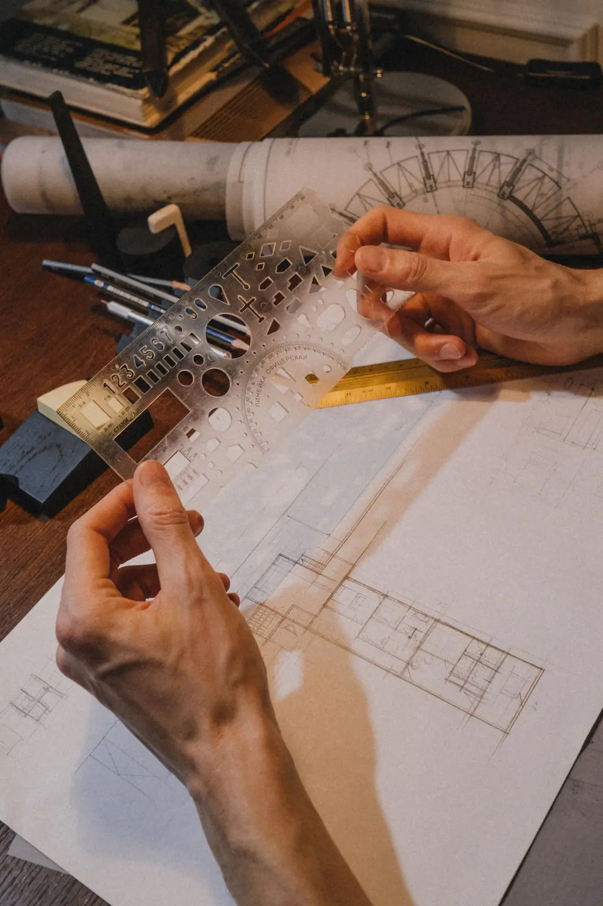
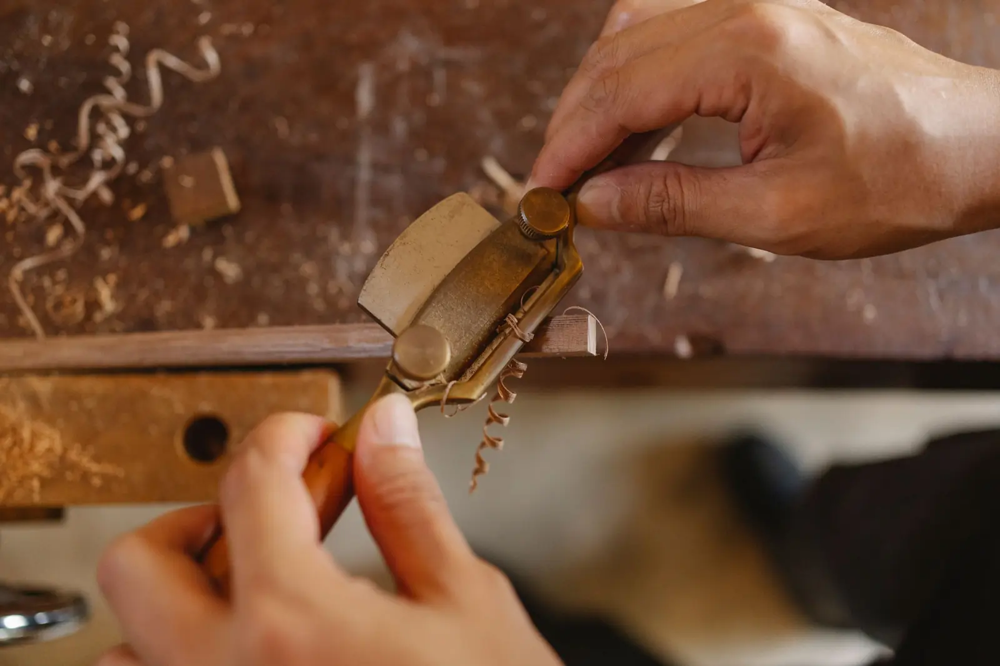
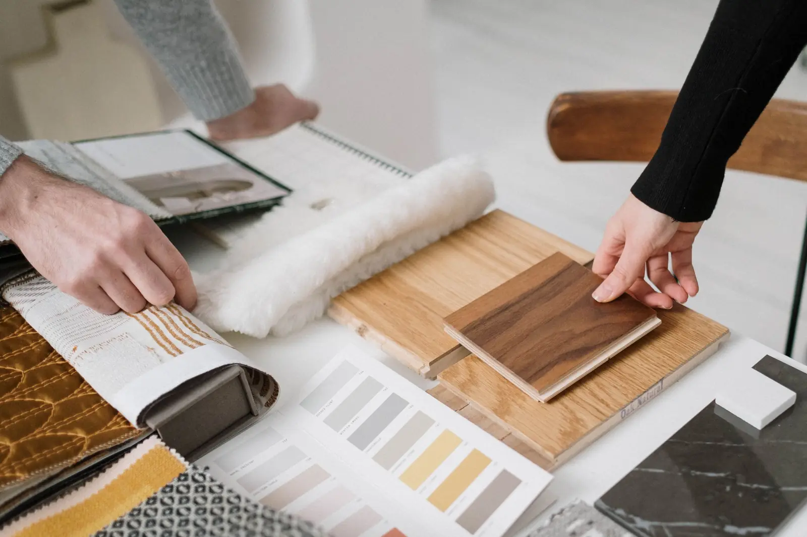
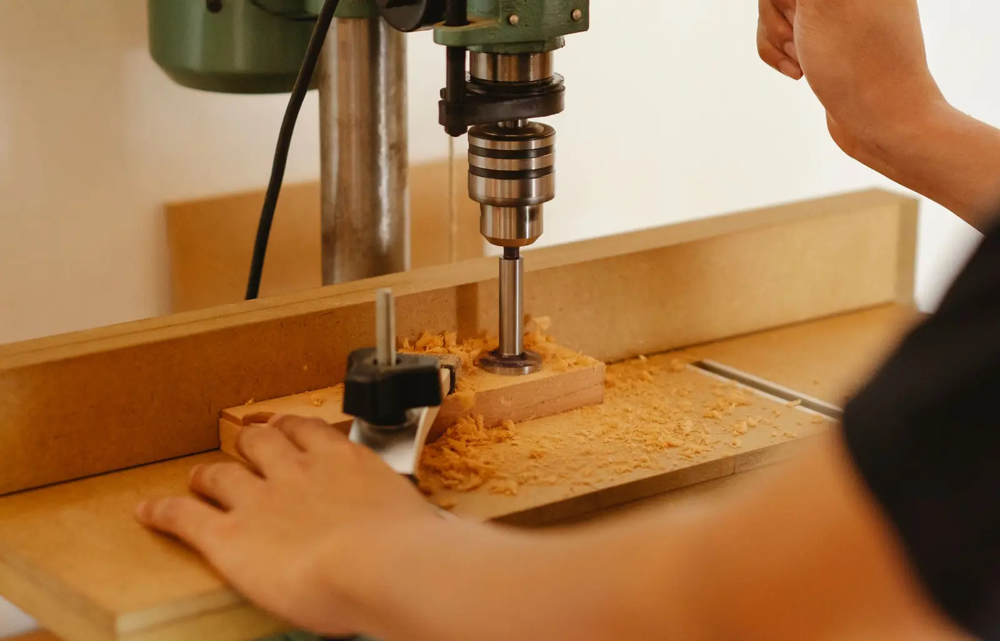
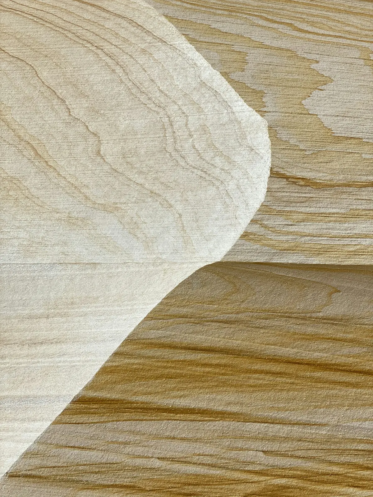
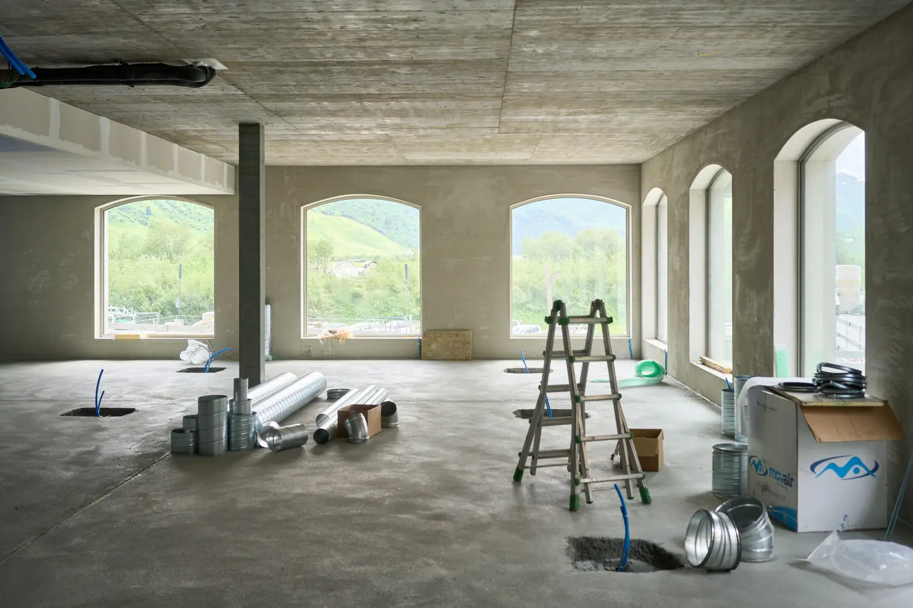
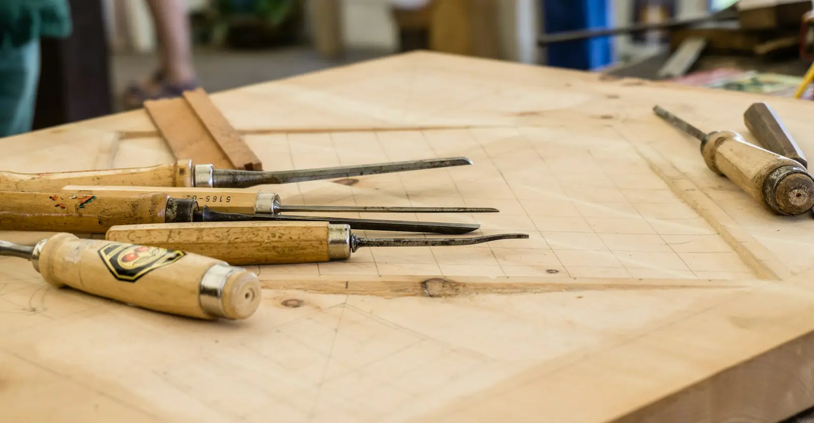
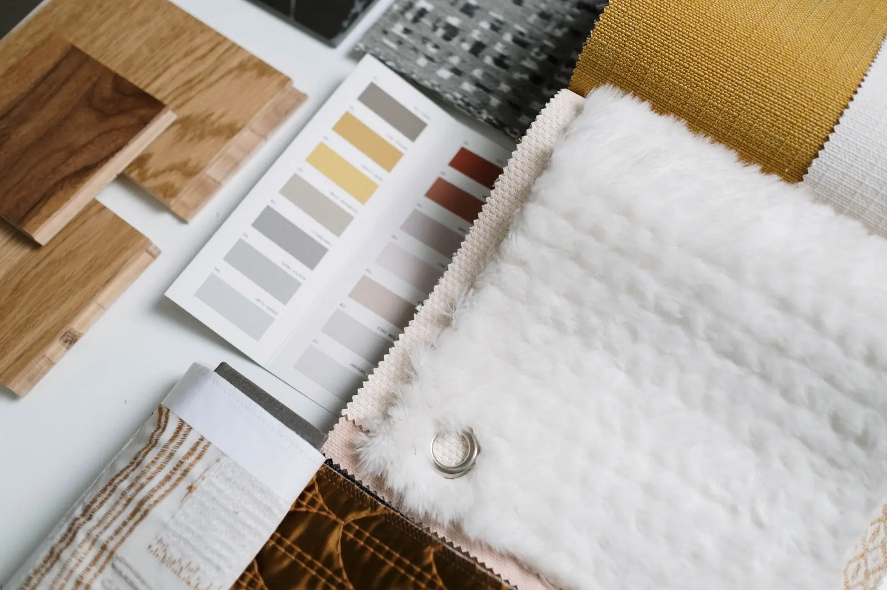
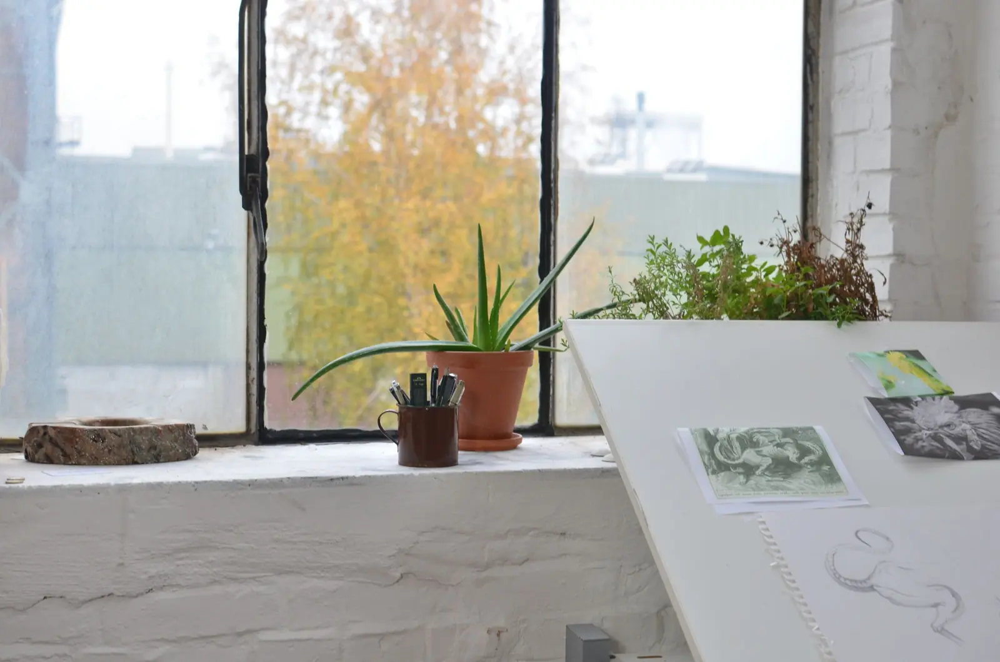

The studio
Design & Build · Est. 2016
07:10 — In the workshop
Drawknife on hardwood
A small studio with a long snag list.
Two Squares designs and builds cafés, restaurants, bars and shops. We started in 2016 on one idea: the person who draws the room should be standing in it when it’s built.
Sixty-four venues and nine cities later, that’s still how we work — one senior lead, one contract, one team from the first site walk to the first service. We’re hospitality people before we’re designers. We learn the menu before we choose a finish, plan the service before the room, and specify for year five, not opening night.
What we believe
Three rules.
-
01
Design the service, then the room.
A beautiful room that slows the kitchen is a bad room. We start with how people work in the space — the pass, the station, the till — and let the interior follow.
-
02
Build for year five.
Hospitality interiors take a beating. We specify for spills, chair legs, heels and deep cleans, so the room wears in rather than out.
-
03
One senior lead, start to finish.
No hand-off to a junior after the concept. The designer who sold you the idea is the one on site at 07:00 checking the tile setting-out.
How we work
One contract.
One team.
One number to call.
Design & build means the same studio draws your room and builds it, under a single contract. It sounds like paperwork. It changes almost everything.
-
01
No gap between drawing and building.
The people pricing the room sit next to the people drawing it. You know what a detail costs before you fall for it.
-
02
A fixed price, sooner.
Our build team checks the design as it develops, so the price is fixed after detail design, not after three rounds of tender.
-
03
Open sooner.
Kitchen equipment, lighting and stone are ordered while the drawings are still being finished. That takes weeks off the programme.
-
04
One party responsible.
If something’s wrong, it’s ours to fix. No designer blaming the builder, no builder blaming the drawings.
Prefer to split it? We also design for other builders and build for other designers. It’s all on the menu. See the menu
People
Twelve of us, plus the trades we keep coming back to.
Placeholder Names and portraits to come.
-

Founder & principal designer
[Founder name]
Fifteen years in hospitality interiors. Walks every site before we quote it, and still draws every counter by hand first.
-

Head of build
[Head of build name]
Runs the site, the trades and the programme. Reads every drawing for what it will cost on site, and closes every snag list.
-

Lighting & FF&E lead
[Lighting & FF&E lead name]
Owns the scenes, the schedules and the samples wall. Carries a lux meter, and checks the colour temperature in every bar they walk into.
-

Project manager
[Project manager name]
Your one number from contract to handover. Keeps the landlord, the licensing consultant and the kitchen supplier working to the same dates.
The studio in numbers
Placeholder Venue and city counts to be confirmed by the owner.
- Studio founded
- 2016
- Venues opened
- 64
- Cities
- 9
- People in the studio
- 12
The workshop and the site
Drawn, made and fitted by the same team.
-

The joinery shop
-

A sanded counter edge
-

The shell, week one
-

Terrazzo sample
-

Setting-out, in pencil
-

Tiling, 07:00
-

The samples wall
Clients & press
Sample Real names only, with written permission.
Operators, developers and brands we’ve worked with:
- [Client name]
- [Client name]
- [Client name]
- [Client name]
- [Client name]
- [Client name]
Featured in [Publication], [Publication] and [Publication].

Careers
Joining the studio.
We hire rarely and keep people. We look for designers who like being on site and site leads who like drawings. Send a few projects and a few lines to [careers email].
Operators, developers, brands.
If you’re opening somewhere people eat, drink or shop, we’d like to see the plan.